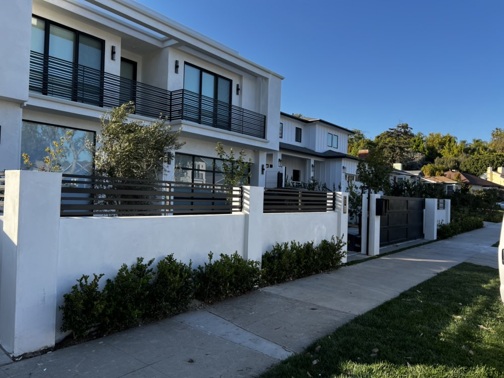

Metal Fabrication for Ojai's One-of-a-Kind Properties
Ojai is unlike any other community in Southern California — a bohemian arts enclave cradled in a sun-drenched east-west valley, known for its pink moment sunsets, healing retreats, and a deeply creative culture. Properties here range from Spanish colonial haciendas along Ojai Avenue to sprawling ranch estates in Upper Ojai, hillside hideaways on the East End, and historic homes that have anchored the valley for generations. At Legendary Metal Works Inc., we've been fabricating custom metalwork that honors Ojai's distinct character for 25+ years, just 20 minutes down Highway 33 from our Ventura shop.
Ojai's rustic-modern aesthetic — where weathered wood meets clean iron, and organic forms meet artisan precision — is exactly where our craft thrives. Whether you're a homeowner seeking a hand-forged driveway gate that doubles as a piece of art, a property manager on a ranch estate needing heavy-duty perimeter fencing, or the owner of a historic property requiring sensitive wrought iron restoration, our team designs and fabricates metalwork tailored to the property and the valley.
Why Metal is the Right Choice for Ojai Properties
Ojai sits in a high fire hazard severity zone — and metal is inherently fire-resistant. While wood gates and fences are a liability in fire country, steel and iron installations protect your property and meet defensible space requirements. Metal also weathers Ojai's intense summer heat, cool mountain winters, and strong Santa Ana winds far better than any wood alternative, lasting decades with minimal maintenance.
Our Services in Ojai Include:
- Motorized Driveway Gates — Ranch-style, Spanish colonial, rustic-modern, and fully custom automated entry gates for Ojai estates and ranches
- Custom Railings — Hand-forged staircase, deck, and balcony railings with artistic detailing that complements Ojai's bohemian aesthetic
- Fire-Resistant Metal Fencing — Steel and iron perimeter fencing that meets defensible space requirements for Ojai's fire-prone hillsides and ranch properties
- Wrought Iron Restoration — Expert restoration of historic iron fencing, gates, and railings on Ojai's older Spanish and craftsman-era properties
- Custom Iron Doors — Artisan entry doors in iron and steel that become architectural focal points on any Ojai home
- Ranch & Estate Gates — Heavy-duty pipe and tube ranch gates, large estate entry systems, and custom agricultural fencing for Upper Ojai ranches
- Side & Garden Gates — Courtyard gates, pedestrian access gates, and garden enclosures suited to Ojai's lush landscaping
- Artistic Custom Fabrication — One-of-a-kind sculptural metalwork for Ojai's artists, architects, and design-forward homeowners
